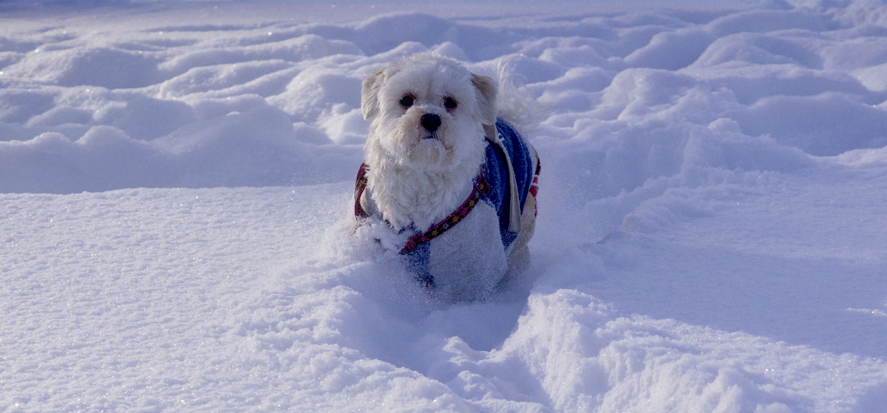
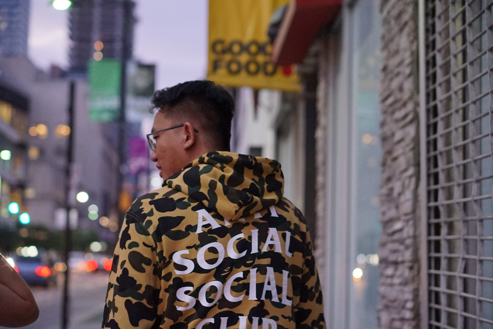
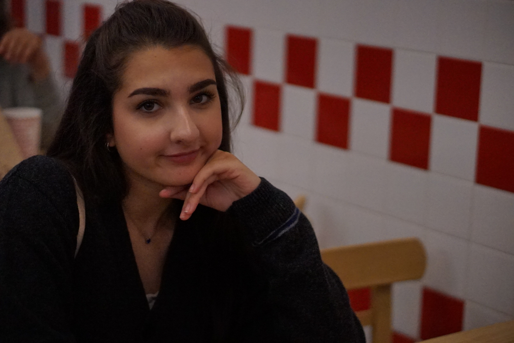
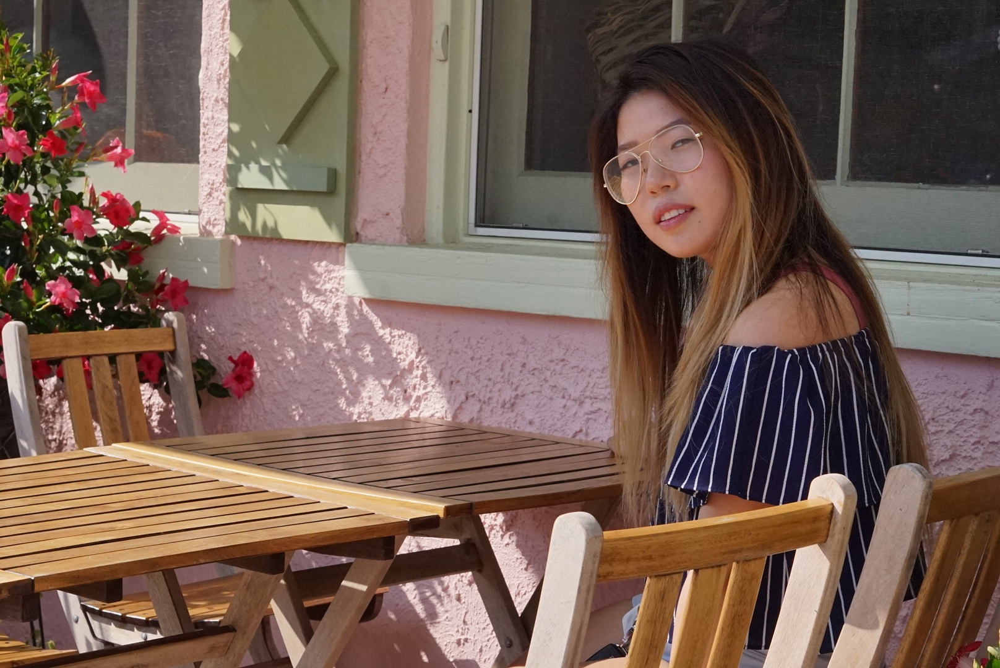
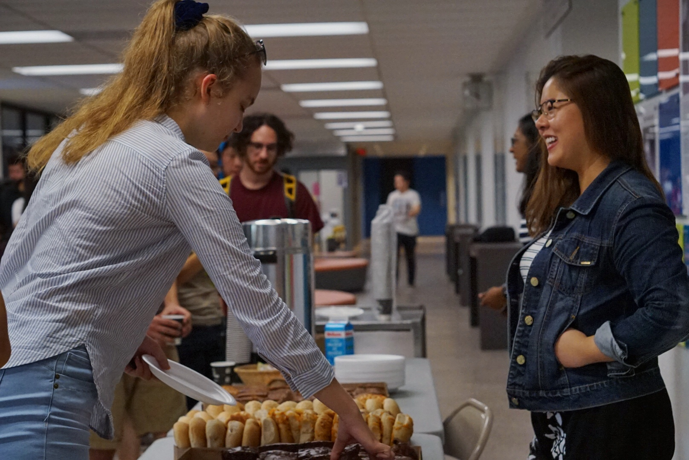
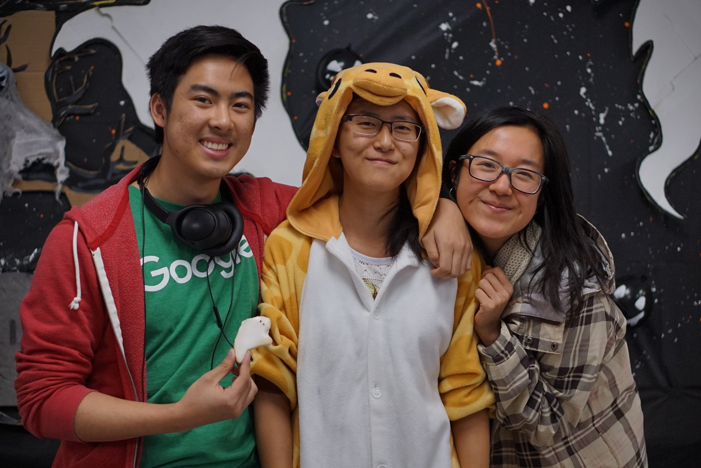
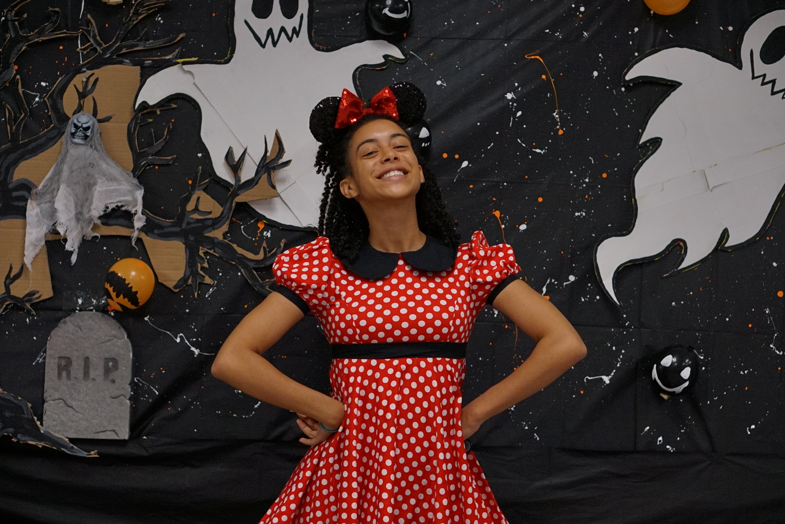
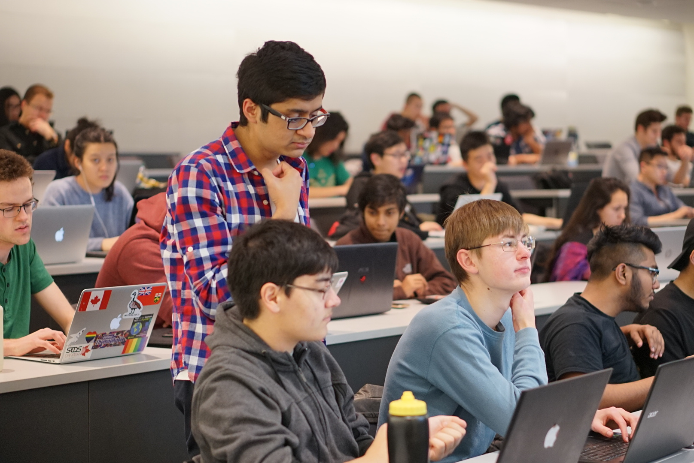
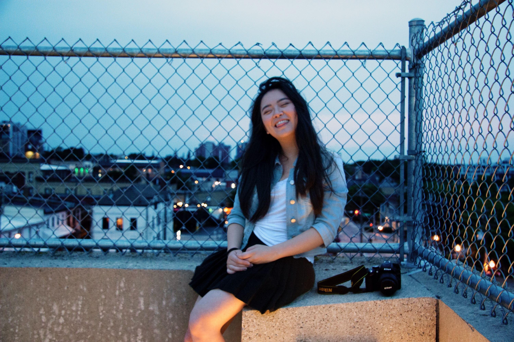
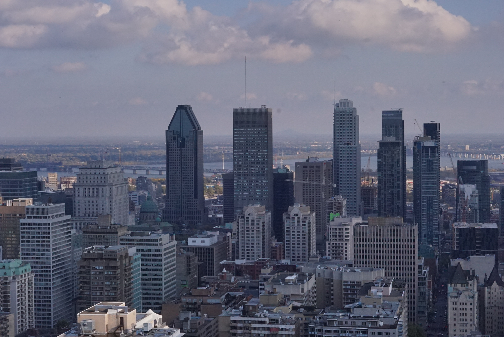

Portraits
I love portaits. In fact, the first lens I got was a portrait lens!
   Events
I've worked as a photographer for MathSoc, here are some of the moments I was able to capture!
   Travel
I love traveling and eating. Traveling always reminds me that I'm not in a small bubble and that there's so much beyond!
 Other
These didn't fit in any of the other categories, hence the name Other!